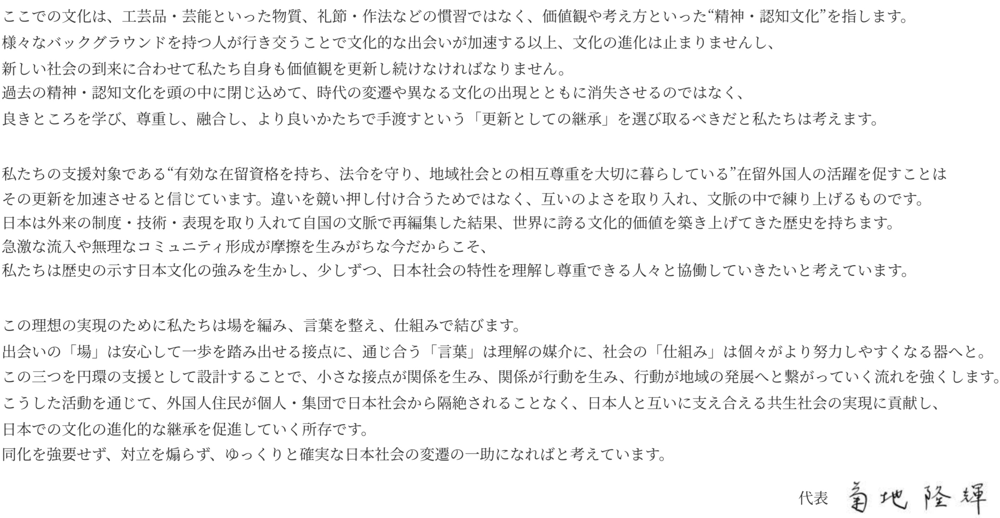

Leading the evolutionary continuity of culture
交流・情報・環境の3軸で“群戦略”を展開し、
次世代在留外国人支援エコシステムを構築する学生団体
お知らせ
読み込み中...
数字で見るconnec+a
組織概要
基本情報
Co-Creation LAB 始動
2025年12月より、神谷町トラストタワー2階「COCO JAPAN」にて個人向け交流イベントを定期開催。伝統工芸品に囲まれた空間での体験型交流を通じ、新たな交流機会を創出。
在留外国人の定着と活躍を促す
代表挨拶

代表挨拶の画像をここに配置img の src に画像パスを指定してください
メンバー統計
原体験：海外で感じた「外国人としての孤立」
団体発足の背景
留学を通して外国人としての孤立感を経験
日本社会への視点
日本で孤立感はさらに強くなるのでは？
団体の使命
孤立感解消への強い思い
日本語学校生の約7割が
日本人との継続的な交流ができていない
日本人の在留外国人への意識
差別や偏見がある
交流がない
交流の場の機会を
増やすべき
出典：出入国在留管理庁「外国人との共生に関する意識調査」2025（日本人対象）
在留外国人が抱える3つの課題
「交流」の課題
個人同士が出会い協働する“場”が設計不十分。言語・機会・心の3つの壁が継続的な交流を阻む。
「情報」の課題
必要な情報を探す→理解する→行動に移す→共有するという流れが途中で途切れる。
「環境」の課題
自治体の受け入れ態勢未整備と鎖国的コミュニティの孤立化が既住民との対立を招く。
増加する在留外国人
5つの事業で群戦略を展開
各事業同士のシナジー増大を目指し、一つの事業のユーザーになると他事業にも参加せざるを得なくなるエンクロージャー制度で、参加者一人当たりの複数事業参加を促進。
Friendship Tour
community
connec+aの競争優位性
少人数・ミッション型・再会導線で、関係が続くサービスを設計
行動ログの“一次データ”を、PAで政策・運用に直結させる
IF・OM・CC → hub → PA の包括的支援
低障壁な価格と導入容易性
3つの壁を解決する
機会の壁
群戦略で参加者に多くの交流機会を提供。語学学校にカスタマイズされたイベントで参加者にリーチ。
言語の壁
希望の言語で話せる環境を創出。イベント・プラットフォームも全て日英両言語で運営。
心の壁
小規模で継続的な国際交流機会を提供し親密感を創出。“一期一会”で終わらせない。
2026上半期
交流推進事業
情報プラットフォーム事業
Connec+a Group の創設へ
connec+aは次の進化として「connec+a Group」を立ち上げる。IF Tour / Ordermade / CCの3事業はNPO法人として場づくりを継続し、HubとPublic Affairsは株式会社の営利事業として展開。
受賞歴
2022-23年度 東京都教育委員会後援
NPO法人Curiosity主催
高校生世代チャレンジプログラム
2023年度 東京都教育委員会主催
チャレンジアシストプログラム
歴代最年少：18歳3ヶ月
バリュー
どんな小さな行動も大きな目的につながっている。常にゴールを意識し、取り組みに意味を見つけながら前に進めていく。
国籍・文化・宗教・言語の違いを超えて、課題を「自分のこと」として受け止める。仲間とともに成果をつくり上げる。
効率的な道だけでは出会えないものがある。遠回りや偶然の出会いの中にこそ、新しい発想や価値が生まれる。
connec+aを動かす
守破離
初めは型を身につけ守ることから。良いと思ったことはどんどん提案し新しさを取り入れ続ける。
やりがい作り
働きやすい環境は大切。自分が何にやりがいを感じているのか自己分析し目標設定。
フラットネス
ポジションはあるけど、ない。自分がやりたいと思ったことはどんどん提案。